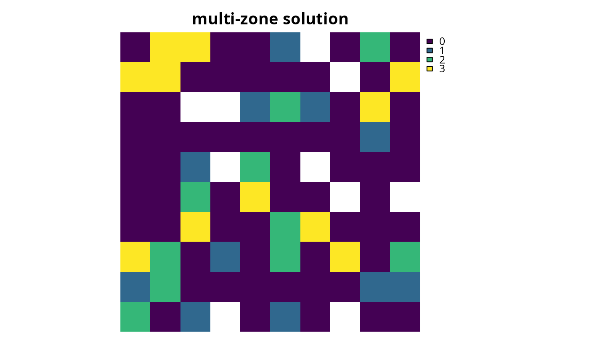

Add penalties to a conservation planning problem() to penalize
solutions that select planning units with higher values from a specific
data source (e.g. anthropogenic impact). These penalties assume
a linear trade-off between the penalty values and the primary
objective of the conservation planning problem() (e.g.
solution cost for minimum set problems; add_min_set_objective().
# S4 method for ConservationProblem,ANY,character add_linear_penalties(x, penalty, data) # S4 method for ConservationProblem,ANY,numeric add_linear_penalties(x, penalty, data) # S4 method for ConservationProblem,ANY,matrix add_linear_penalties(x, penalty, data) # S4 method for ConservationProblem,ANY,Matrix add_linear_penalties(x, penalty, data) # S4 method for ConservationProblem,ANY,Raster add_linear_penalties(x, penalty, data) # S4 method for ConservationProblem,ANY,dgCMatrix add_linear_penalties(x, penalty, data)
Arguments
| x |
|
|---|---|
| penalty |
|
| data |
|
Details
This function penalizes solutions that have higher values according to the sum of the penalty values associated with each planning unit, weighted by status of each planning unit in the solution.
Specifically, the linear penalties are calculated using the following
equations.
Let \(I\) denote the set of planning units
(indexed by \(i\)), \(Z\) the set of management zones (indexed by
\(z\)), and \(X_{iz}\) the decision variable for allocating
planning unit \(i\) to zone \(z\) (e.g. with binary
values one indicating if planning unit is allocated or not). Also, let
\(P_z\) represent the penalty scaling value for zones
\(z \in Z\) (argument to penalty), and
\(D_{iz}\) the penalty data for allocating planning unit
\(i \in I\) to zones \(z \in Z\) (argument to
data if supplied as a matrix object).
$$ \sum_{i}^{I} \sum_{z}^{Z} P_z \times D_{iz} \times X_{iz} $$
Note that when the problem objective is to maximize some measure of benefit and not minimize some measure of cost, the term \(P_z\) is replaced with \(-P_z\).
Data format
The argument to data can be specified using the following formats.
characterfield (column) name(s) that contain the data for penalizing planning units. This type of argument is only compatible if the planning units in the argument to
xare aSpatial,sf::sf(), ordata.frameobject. The fields (columns) must havenumericvalues, and must not contain any missing (NA) values. For problems involving multiple zones, the argument todatamust contain a field name for each zone.numericvectorcontaining the data for penalizing each planning unit. These values must not contain any missing (NA) values. Note that this type of argument is only available for planning units that contain a single zone.Rastercontaining the data for penalizing planning units. This type of argument is only compatible if the planning units in the argument to
xareSpatial,sf::sf(), or orRaster(i.e. they are in a spatially referenced format). If the planning unit data are aSpatialorsf::sf()object, then the penaltydataare calculated by overlaying the planning units with the argument todataand calculating the sum of the values. If the planning unit data are in theRasterthen the penaltydataare calculated by extracting the cell values (note that the planning unit data and the argument to codedata must have exactly the same dimensionality, extent, and missingness). For problems involving multiple zones, the argument todatamust contain a layer for each zone.matrix,Matrixcontaining
numericvalues that specify data for penalizing each planning unit. Each row corresponds to a planning unit, each column corresponds to a zone, and each cell indicates the data for penalizing a planning unit when it is allocated to a given zone.
Examples
# set seed for reproducibility set.seed(600) # load data data(sim_pu_polygons, sim_pu_zones_stack, sim_features, sim_features_zones) # add a column to contain the penalty data for each planning unit # e.g. these values could indicate the level of habitat sim_pu_polygons$penalty_data <- runif(nrow(sim_pu_polygons)) # plot the penalty data to visualise its spatial distribution spplot(sim_pu_polygons, zcol = "penalty_data", main = "penalty data", axes = FALSE, box = FALSE)# create minimal problem with minimum set objective, # this does not use the penalty data p1 <- problem(sim_pu_polygons, sim_features, cost_column = "cost") %>% add_min_set_objective() %>% add_relative_targets(0.1) %>% add_binary_decisions() %>% add_default_solver(verbose = FALSE) # print problem print(p1)#> Conservation Problem #> planning units: SpatialPolygonsDataFrame (90 units) #> cost: min: 190.13276, max: 215.86384 #> features: layer.1, layer.2, layer.3, ... (5 features) #> objective: Minimum set objective #> targets: Relative targets [targets (min: 0.1, max: 0.1)] #> decisions: Binary decision #> constraints: <none> #> penalties: <none> #> portfolio: default #> solver: Gurobi [first_feasible (0), gap (0.1), node_file_start (-1), numeric_focus (0), presolve (2), threads (1), time_limit (2147483647), verbose (0)]# create an updated version of the previous problem, # with the penalties added to it p2 <- p1 %>% add_linear_penalties(100, data = "penalty_data") # print problem print(p2)#> Conservation Problem #> planning units: SpatialPolygonsDataFrame (90 units) #> cost: min: 190.13276, max: 215.86384 #> features: layer.1, layer.2, layer.3, ... (5 features) #> objective: Minimum set objective #> targets: Relative targets [targets (min: 0.1, max: 0.1)] #> decisions: Binary decision #> constraints: <none> #> penalties: <Linear penalties [penalty (100)]> #> portfolio: default #> solver: Gurobi [first_feasible (0), gap (0.1), node_file_start (-1), numeric_focus (0), presolve (2), threads (1), time_limit (2147483647), verbose (0)]# \dontrun{ # solve the two problems s1 <- solve(p1) s2 <- solve(p2) # plot the solutions and compare them, # since we supplied a very high penalty value (i.e. 100), relative # to the range of values in the penalty data and the objective function, # the solution in s2 is very sensitive to values in the penalty data spplot(s1, zcol = "solution_1", main = "solution without penalties", axes = FALSE, box = FALSE)# for real conservation planning exercises, # it would be worth exploring a range of penalty values (e.g. ranging # from 1 to 100 increments of 5) to explore the trade-offs # } # now, let's examine a conservation planning exercise involving multiple # management zones # create targets for each feature within each zone, # these targets indicate that each zone needs to represent 10% of the # spatial distribution of each feature targ <- matrix(0.1, ncol = number_of_zones(sim_features_zones), nrow = number_of_features(sim_features_zones)) # create penalty data for allocating each planning unit to each zone, # these data will be generated by simulating values penalty_stack <- simulate_cost(sim_pu_zones_stack[[1]], n = number_of_zones(sim_features_zones))#> ...# plot the penalty data, each layer corresponds to a different zone plot(penalty_stack, main = "penalty data", axes = FALSE, box = FALSE)# create a multi-zone problem with the minimum set objective # and penalties for allocating planning units to each zone, # with a penalty scaling factor of 1 for each zone p3 <- problem(sim_pu_zones_stack, sim_features_zones) %>% add_min_set_objective() %>% add_relative_targets(targ) %>% add_linear_penalties(c(1, 1, 1), penalty_stack) %>% add_binary_decisions() %>% add_default_solver(verbose = FALSE) # print problem print(p3)#> Conservation Problem #> zones: zone_1, zone_2, zone_3 (3 zones) #> planning units: RasterStack (90 units) #> cost: min: 182.60173, max: 224.84924 #> features: feature_1, feature_2, feature_3, ... (5 features) #> objective: Minimum set objective #> targets: Relative targets [targets (min: 0.1, max: 0.1)] #> decisions: Binary decision #> constraints: <none> #> penalties: <Linear penalties [penalty (min: 1, max: 1)]> #> portfolio: default #> solver: Gurobi [first_feasible (0), gap (0.1), node_file_start (-1), numeric_focus (0), presolve (2), threads (1), time_limit (2147483647), verbose (0)]# \dontrun{ # solve problem s3 <- solve(p3) # plot solution plot(category_layer(s3), main = "multi-zone solution", axes = FALSE, box = FALSE)# }